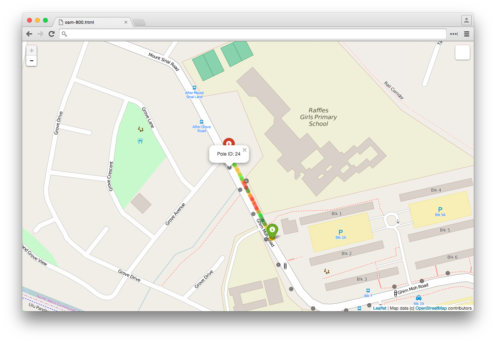
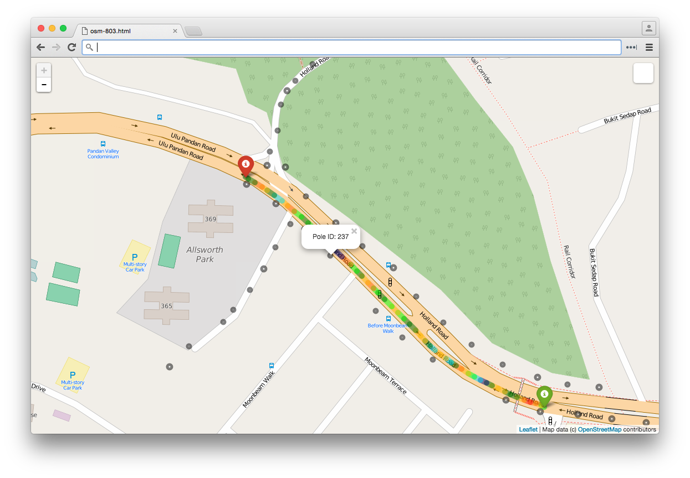
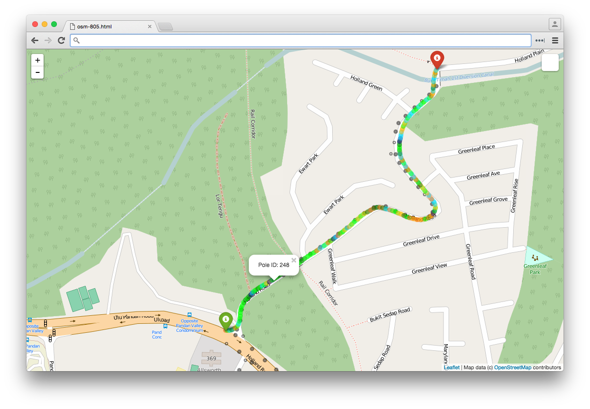
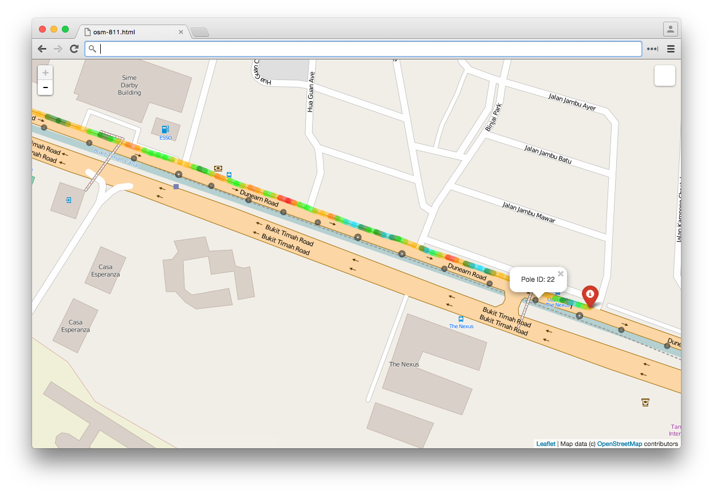
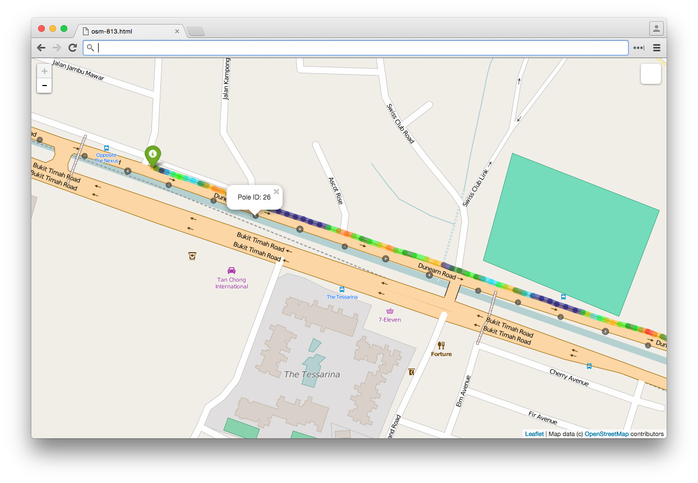
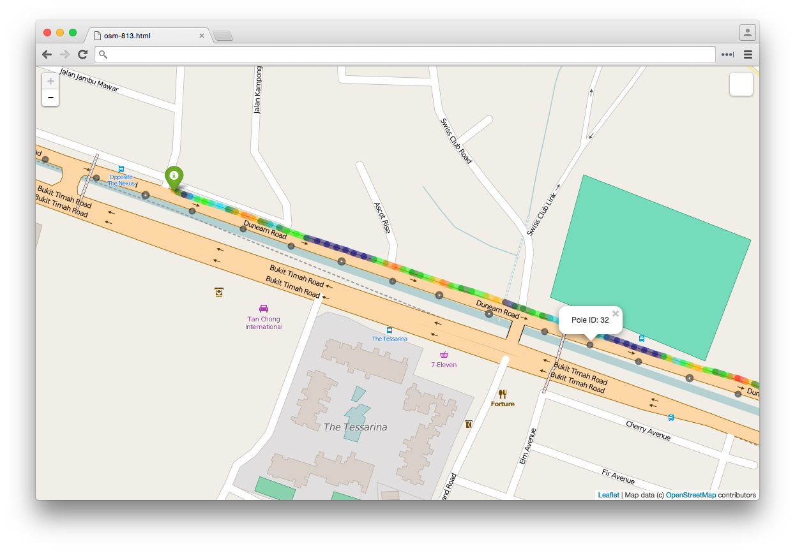
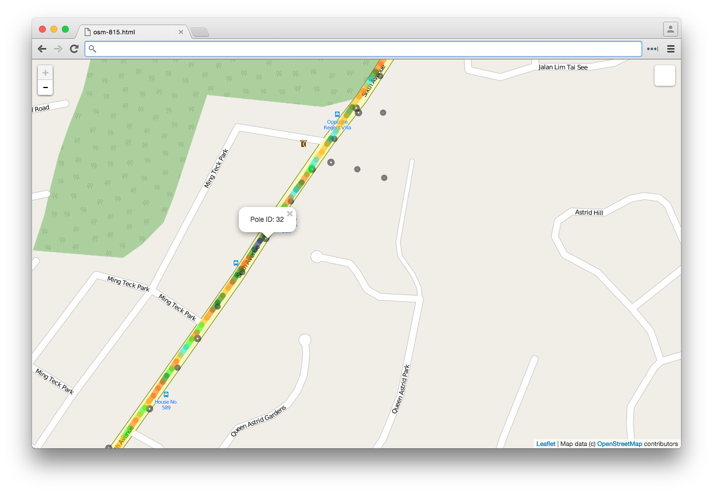
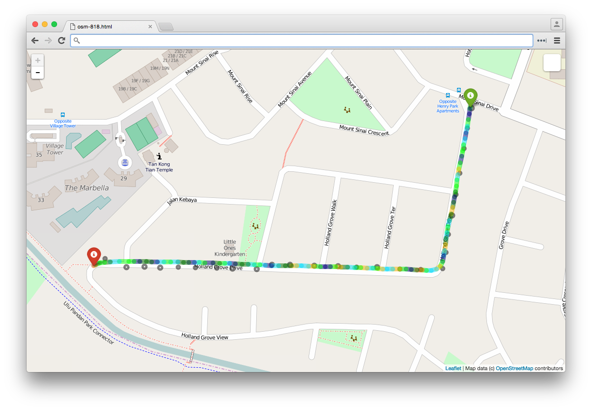
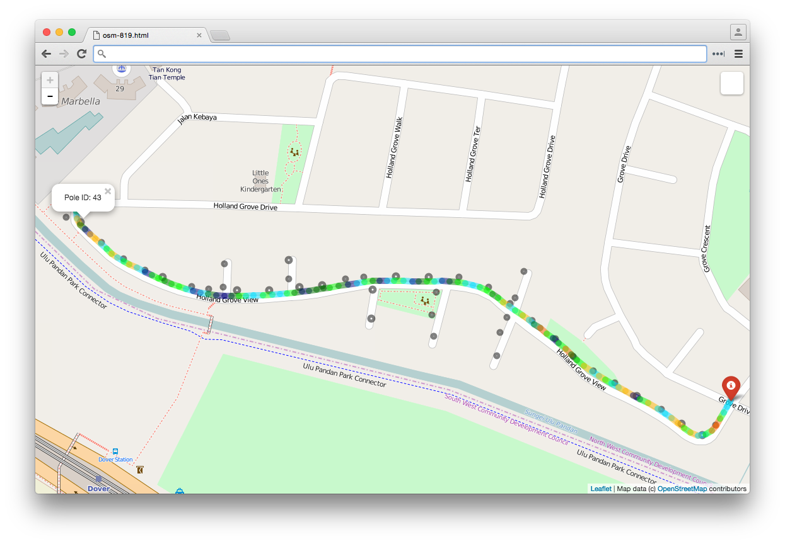
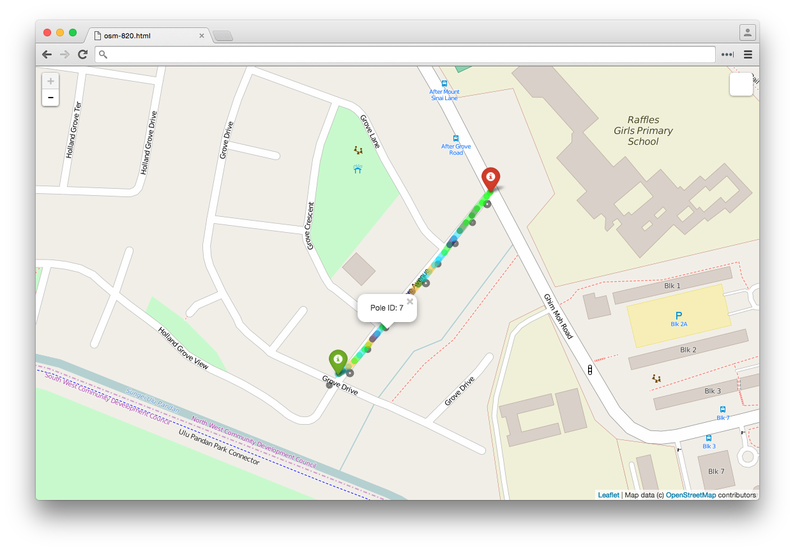

15th of February in the year 590 was an important one as Khosrow II was crowned king of Persia. About 1400 years later, the night of 15th of February in the year 2016 was also an important one as Litesense® was taken out to ensure that the streets of Ulu Pandan and Bukit Timah were safe for us to drive on, ride, cycle and walk along.
Results of the mission were visualised in Folium, a project "that makes it easy to visualize data that's been manipulated in Python on an interactive Leaflet map". In the map below, the
green marker is the start point
red marker is the end point
different colours represent varying brightness levels (measured in lux)
tiny black circles are pole identification numbers
1. Ghim Moh Road near Pole ID 24 with brightness level of 2.6 lux2. Holland Road near Pole ID 237 with brightness level of 2.7 lux3. Ulu Pandan Road near Pole ID 47 with brightness level of 2.3 lux4. Multiple areas along Holland Road starting from Pole ID 248 with brightness level of 2.8 lux5. Dunearn Road near Pole ID 22 with brightness level of 2.3 lux6. Dunearn Road near Pole ID 26 with brightness level of 0.75 lux7. Dunearn Road near Pole ID 32 with brightness level of 1.75 lux8. Sixth Avenue near Pole ID 32 with brightness level of 1.75 lux9. Holland Grove Drive10. Holland Grove View near Pole ID 43 with brightness level of 0.25 lux11. Grove Avenue near Pole ID 7 with brightness level of 1.25 lux
All other roads were uniformly lit. Great job guys! You know who you are. =)
(Cosmiqo Litesense®, 15th February 2016 between 2130hrs and 2300hrs)